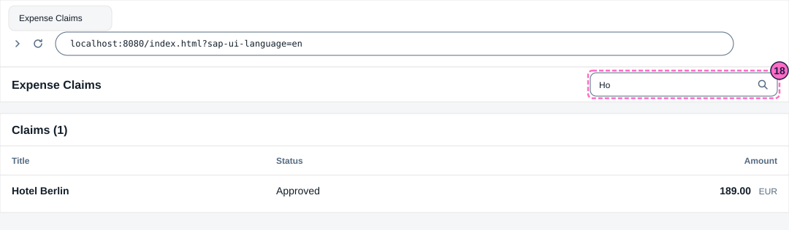
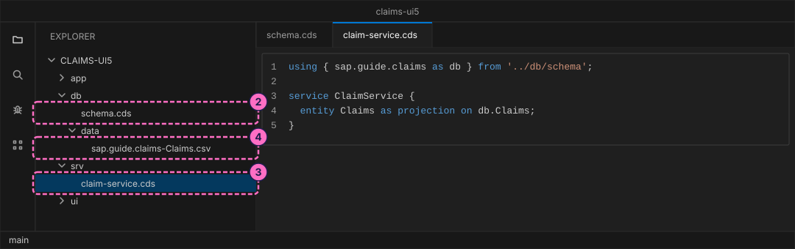
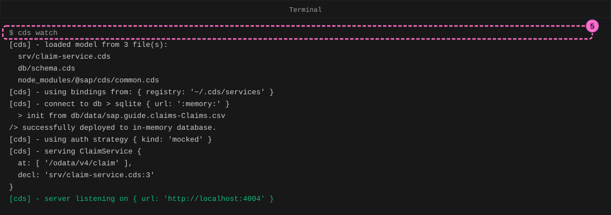
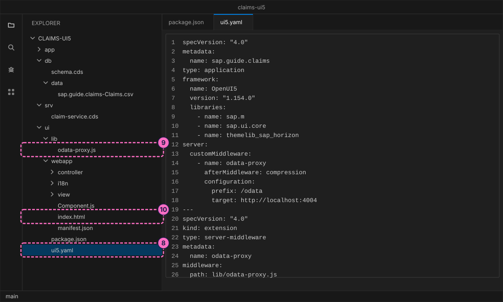
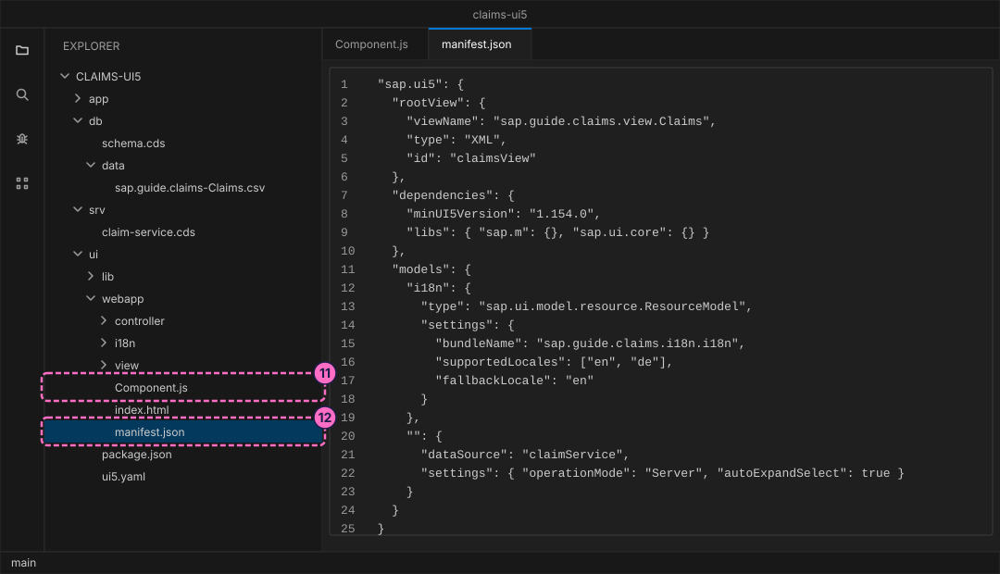
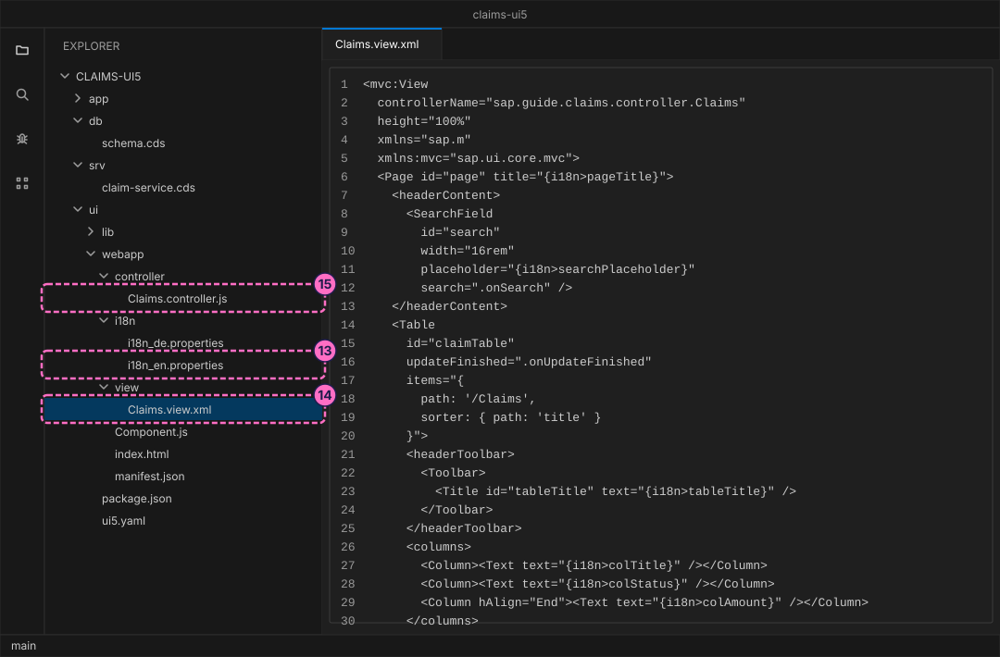
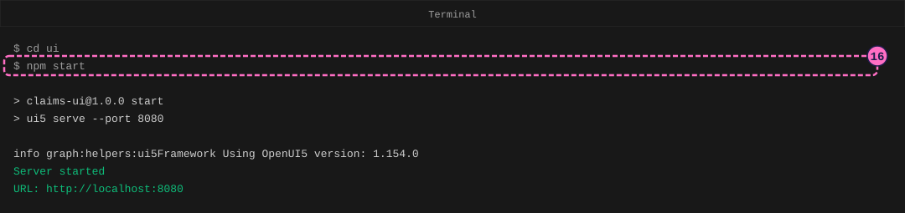
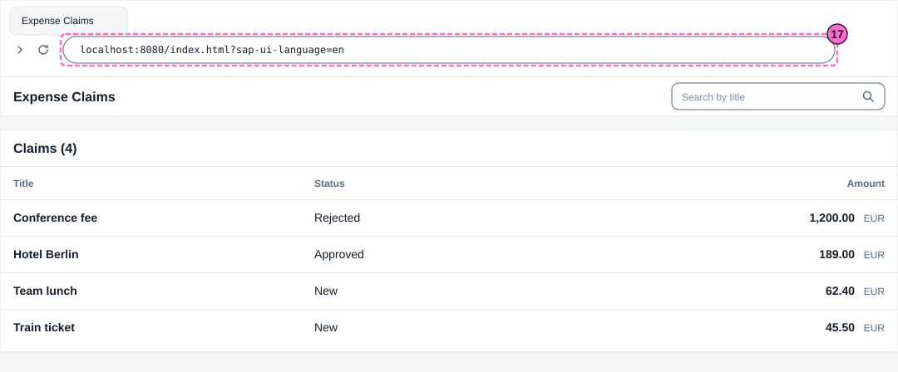

SAP Guide: Your First SAPUI5 App
|
This content was generated with the assistance of AI and should be verified against the official documentation before being relied on in production. |
Checked on 2026-11-13 against OpenUI5 1.154.0, UI5 Tooling (@ui5/cli) 4.0.73, CAP Node.js 10.2 (@sap/cds 10.2.2, @sap/cds-dk 10.2.1) and Node.js 24.21.
What you build
This is a teaching model built with CAP. It is not SAP S/4HANA or SAP SuccessFactors and does not reproduce their screens.
You build a small browser app for expense claims with UI5, the JavaScript library behind most SAP web screens. The app has one screen: a page with a search field and a table of claims. The table reads its rows from a CAP service over OData V4, and every text on the screen comes from a language file, in English and in German. You write the files by hand, so you see what each of them is for: the project file of UI5 Tooling, the start page, the component, the manifest, the XML view, the controller and the texts. Two small servers run on your machine: CAP serves the data and UI5 Tooling serves the app.

Before you start
-
No account is needed. UI5 Tooling and OpenUI5 come from the public npm registry under the Apache License 2.0, and the app loads UI5 from your own machine, not from a content delivery network. UI5 Tooling downloads the OpenUI5 libraries that
ui5.yamlnames into a cache folder in your home directory the first time it runs. The CAP packages carry the SAP Developer License Agreement, version 3.2, which you accept by installing them, as in Your First CAP Service. -
Install Node.js 22.12 or newer.
node -vprints the version. -
Use a code editor such as Visual Studio Code, a terminal and a browser. You need two terminal windows: one keeps the CAP service running, the other runs the commands and UI5 Tooling.
-
Read SAPUI5 and OpenUI5 Basics first, or at least know what a view, a controller and a model are, and read CAP Getting Started for the service part.
-
The first phase builds the same three small files as the guide Your First CAP Service, with four claims instead of one, so you can do this guide on its own. If you did that guide, you know the commands already. The CAP command line tools (
@sap/cds-dk) must be installed, as that guide describes. -
The names are the model’s own: the entity
Claims, the status codesN(New),A(Approved) andR(Rejected), the titles and the amounts are made up for this guide. No name comes from an SAP page. -
The figures are drawings of the editor, the terminal and the browser, not screenshots. A highlighted box with a number marks the file, the command or the address of the step with the same number.
Steps
Create the service
-
Create the CAP project and install its dependencies. The option
--nodejschooses the JavaScript runtime of CAP:cds init claims-ui5 --nodejs cd claims-ui5 npm installcds initends withSuccessfully initialized CAP project, andnpm installwithfound 0 vulnerabilities. Open the folder in your editor (in Visual Studio Code,code .). -
Create the file
db/schema.cds. It describes one entity,Claims, with a title, a status and an amount.cuidandmanagedare ready-made building blocks of CAP that add the keyIDand the fieldscreatedAt,createdBy,modifiedAtandmodifiedBy:using { cuid, managed } from '@sap/cds/common'; namespace sap.guide.claims; entity Claims : cuid, managed { title : String(80); status : String(1) default 'N'; amount : Decimal(9,2); }Source: CAP: Domain Modeling
-
Create the file
srv/claim-service.cds. The serviceClaimServiceoffersClaimsas a projection on the entity, which means unchanged. CAP serves it as an OData V4 service at/odata/v4/claim, derived from the service name:using { sap.guide.claims as db } from '../db/schema'; service ClaimService { entity Claims as projection on db.Claims; } -
Create the folder
db/dataand in it the filesap.guide.claims-Claims.csvwith four claims. CAP loads every CSV file indb/datainto the database when the server starts. The file name is the namespace, a dash and the entity name:ID,title,status,amount 11111111-1111-1111-1111-111111111111,Train ticket,N,45.50 22222222-2222-2222-2222-222222222222,Hotel Berlin,A,189.00 33333333-3333-3333-3333-333333333333,Team lunch,N,62.40 44444444-4444-4444-4444-444444444444,Conference fee,R,1200.00Source: CAP: Providing Initial Data

-
In the first terminal, in the project folder, start the service in watch mode and leave it running:
cds watchThe log lists the three model files, connects to a database that lives only in memory (
sqlite { url: ':memory:' }), fills it from your CSV file and ends withserver listening on { url: 'http://localhost:4004' }. The lineserving ClaimServicenames the path/odata/v4/claim.
The figure leaves out the banner that
cds watchprints before the first line. -
In the second terminal, ask the service for the title and amount of every claim, sorted by title, with a count. The quotation marks keep your shell from reading the
$and the&:curl 'http://localhost:4004/odata/v4/claim/Claims?$select=title,amount&$orderby=title&$count=true'The answer is one line of JSON. It names the count, 4, and holds the four claims in the order Conference fee, Hotel Berlin, Team lunch, Train ticket. The key
IDis part of every row, and the amount is a string in quotation marks, such as"45.50". The app reads exactly this answer.{"@odata.context":"$metadata#Claims","@odata.count":4,"value":[{"title":"Conference fee","amount":"1200.00","ID":"44444444-4444-4444-4444-444444444444"},{"title":"Hotel Berlin","amount":"189.00","ID":"22222222-2222-2222-2222-222222222222"},{"title":"Team lunch","amount":"62.40","ID":"33333333-3333-3333-3333-333333333333"},{"title":"Train ticket","amount":"45.50","ID":"11111111-1111-1111-1111-111111111111"}]}
Create the UI5 project
The app is its own npm project in a folder ui, next to db and srv. It has its own package.json because UI5 Tooling reads the dependencies of the project from it, and the dependencies of the app have nothing to do with those of the service.
-
Create the folder
uiand in it the fileui/package.json. It names one development dependency, UI5 Tooling, and a scriptstart."type": "module"lets UI5 Tooling load the small JavaScript file of step 9. Then install it from theuifolder and ask for the version:{ "name": "claims-ui", "version": "1.0.0", "private": true, "type": "module", "devDependencies": { "@ui5/cli": "4.0.73" }, "scripts": { "start": "ui5 serve --port 8080" } }cd ui npm install npx ui5 --versionnpm installprints a few warnings about deprecated packages and a summary of known vulnerabilities. They come from the packages of the UI5 command line tool, which only runs on your machine while you develop; the app itself never loads them.ui5 --versionprints4.0.73followed by the location of the tool. -
Create the file
ui/ui5.yaml, the project file of UI5 Tooling. The first part describes the project: the file formatspecVersion, the project name (it is also the id of the app), the typeapplicationand theframework. The framework section names the editionOpenUI5, the version1.154.0and the libraries the app needs:sap.ui.coreis the base,sap.mhas the controls for phones and desktops, andthemelib_sap_horizonis the Horizon look. UI5 Tooling downloads these libraries from npm and serves them at/resources, so the app never needs the libraries inpackage.json. The part afterserver:and the second document, after the line of three dashes, add a small server extension that step 9 explains:specVersion: "4.0" metadata: name: sap.guide.claims type: application framework: name: OpenUI5 version: "1.154.0" libraries: - name: sap.m - name: sap.ui.core - name: themelib_sap_horizon server: customMiddleware: - name: odata-proxy afterMiddleware: compression configuration: prefix: /odata target: http://localhost:4004 --- specVersion: "4.0" kind: extension type: server-middleware metadata: name: odata-proxy middleware: path: lib/odata-proxy.jsSource: UI5 CLI documentation
-
Create the folder
ui/liband in it the fileodata-proxy.js. The browser loads the app fromhttp://localhost:8080, but the service lives athttp://localhost:4004, which is a different origin. A browser lets a page call another origin only when that origin allows it (this is called CORS), and the service of this guide does not allow it for the requests that UI5 sends (the first row of the table in "What can go wrong" shows what that looks like). The way out is to let the browser talk to one origin only. This file is a small server extension for UI5 Tooling, about twenty lines of Node.js that you can read in one go: it takes every request whose path starts with/odata(theprefixofui5.yaml) and hands it on to the CAP service (thetarget). Every other request, for the page and for the libraries, goes on to UI5 Tooling as usual:import http from "node:http"; // Passes every request whose path starts with the prefix on to the CAP server, // so the browser only ever talks to the origin that served the app. export default function ({ options }) { const target = new URL(options.configuration.target); const prefix = options.configuration.prefix; return (req, res, next) => { if (!req.url.startsWith(prefix)) { return next(); } const proxied = http.request( { host: target.hostname, port: target.port, path: req.url, method: req.method, headers: req.headers }, (answer) => { res.writeHead(answer.statusCode, answer.headers); answer.pipe(res); } ); proxied.on("error", next); req.pipe(proxied); }; } -
Create the folder
ui/webappand in it the start pageindex.html. The script tag loadsresources/sap-ui-core.js, the core of UI5 that UI5 Tooling serves, and itsdata-attributes set the Horizon theme, the asynchronous loading and the folder that belongs to the namespacesap.guide.claims.ComponentSupportthen builds the component from thedivwithdata-sap-ui-component. The height settings onhtml,bodyand thediv(anddata-height) give the page the full height of the browser window, which the page of the app needs to show anything:<!DOCTYPE html> <html style="height: 100%"> <head> <meta charset="utf-8"> <title>Expense Claims</title> <script id="sap-ui-bootstrap" src="resources/sap-ui-core.js" data-sap-ui-theme="sap_horizon" data-sap-ui-compat-version="edge" data-sap-ui-resource-roots='{ "sap.guide.claims": "./" }' data-sap-ui-on-init="module:sap/ui/core/ComponentSupport" data-sap-ui-async="true"></script> </head> <body class="sapUiBody" style="height: 100%"> <div data-sap-ui-component style="height: 100%" data-name="sap.guide.claims" data-id="container" data-height="100%" data-settings='{ "id": "sap.guide.claims" }'></div> </body> </html>
Describe the app
-
Create the file
ui/webapp/Component.js. A UI5 app is a component: a class that the page creates. This one extendsUIComponentand says two things: its settings are in a filemanifest.json, and it creates its content asynchronously. It needs no more code. The wrappersap.ui.defineloads the modules that the class needs, hereUIComponent:sap.ui.define([ "sap/ui/core/UIComponent" ], (UIComponent) => { "use strict"; return UIComponent.extend("sap.guide.claims.Component", { metadata: { manifest: "json", interfaces: ["sap.ui.core.IAsyncContentCreation"] } }); });Source: Components
-
Create the file
ui/webapp/manifest.json, the descriptor of the app.sap.appholds the id, the title (a key from the language file, written with two braces) and the data sourceclaimService: the address of the OData service, with a relative path that the proxy of step 9 answers.sap.ui5names the root view, the libraries and the models. A model is the way a view reaches data.i18nis a resource model that reads the language files and lists the languages the app supports (enandde, English as the fallback). The model with the empty name is the default model: an OData V4 model on the data source.operationMode: "Server"means that filtering and sorting are done by the service, not in the browser, andautoExpandSelectmakes UI5 ask only for the fields the view shows:{ "_version": "1.65.0", "sap.app": { "id": "sap.guide.claims", "type": "application", "title": "{{appTitle}}", "applicationVersion": { "version": "1.0.0" }, "dataSources": { "claimService": { "uri": "/odata/v4/claim/", "type": "OData", "settings": { "odataVersion": "4.0" } } } }, "sap.ui5": { "rootView": { "viewName": "sap.guide.claims.view.Claims", "type": "XML", "id": "claimsView" }, "dependencies": { "minUI5Version": "1.154.0", "libs": { "sap.m": {}, "sap.ui.core": {} } }, "models": { "i18n": { "type": "sap.ui.model.resource.ResourceModel", "settings": { "bundleName": "sap.guide.claims.i18n.i18n", "supportedLocales": ["en", "de"], "fallbackLocale": "en" } }, "": { "dataSource": "claimService", "settings": { "operationMode": "Server", "autoExpandSelect": true } } } } }Source: Manifest (Descriptor for Applications, Components, and Libraries) and Model Instantiation and Data Access (OData V4 model)

The figure shows the second half of the file, from
sap.ui5on.
Write the view, the controller and the texts
-
Create the folder
ui/webapp/i18nand in it the two language files. Each line is a key, an equals sign and the text. The two files have the same keys.tableTitleCountholds the placeholder{0}, which the controller fills with the number of rows. The files are namedi18n_en.propertiesandi18n_de.propertiesbecause the manifest lists the languagesenandde:appTitle=Expense Claims pageTitle=Expense Claims searchPlaceholder=Search by title tableTitle=Claims tableTitleCount=Claims ({0}) colTitle=Title colStatus=Status colAmount=Amount statusN=New statusA=Approved statusR=RejectedappTitle=Spesenabrechnungen pageTitle=Spesenabrechnungen searchPlaceholder=Nach Titel suchen tableTitle=Abrechnungen tableTitleCount=Abrechnungen ({0}) colTitle=Titel colStatus=Status colAmount=Betrag statusN=Neu statusA=Genehmigt statusR=AbgelehntSource: Resource Model
-
Create the folder
ui/webapp/viewand in it the fileClaims.view.xml, the screen. A UI5 view in XML is a tree of controls: aPagewith aSearchFieldin its header and aTable. The texts are bindings to the language files,{i18n>pageTitle}means the keypageTitleof the modeli18n. The tableitemsare bound to the path/Claimsof the default model, which is the entity set of the service, sorted bytitle. UI5 repeats theColumnListItemonce per row, and inside it{title}is the title of that row. The status goes through a formatter of the controller, and the amount through the typesap.ui.model.odata.type.Decimal, which turns the string"45.50"into a number that the browser formats for the language of the user:<mvc:View controllerName="sap.guide.claims.controller.Claims" height="100%" xmlns="sap.m" xmlns:mvc="sap.ui.core.mvc"> <Page id="page" title="{i18n>pageTitle}"> <headerContent> <SearchField id="search" width="16rem" placeholder="{i18n>searchPlaceholder}" search=".onSearch" /> </headerContent> <Table id="claimTable" updateFinished=".onUpdateFinished" items="{ path: '/Claims', sorter: { path: 'title' } }"> <headerToolbar> <Toolbar> <Title id="tableTitle" text="{i18n>tableTitle}" /> </Toolbar> </headerToolbar> <columns> <Column><Text text="{i18n>colTitle}" /></Column> <Column><Text text="{i18n>colStatus}" /></Column> <Column hAlign="End"><Text text="{i18n>colAmount}" /></Column> </columns> <items> <ColumnListItem> <cells> <ObjectIdentifier title="{title}" /> <ObjectStatus text="{ path: 'status', formatter: '.formatStatus' }" /> <ObjectNumber number="{ path: 'amount', type: 'sap.ui.model.odata.type.Decimal', constraints: { precision: 9, scale: 2 } }" unit="EUR" /> </cells> </ColumnListItem> </items> </Table> </Page> </mvc:View>Source: Views and Data Binding
-
Create the folder
ui/webapp/controllerand in it the fileClaims.controller.js. The controller holds the code of the view, and its name is thecontrollerNameof the view.formatStatusturns the status code of a row into the word from the language file:Nbecomes the text ofstatusN.onUpdateFinishedruns when the table has its rows and writes the number of rows into the title of the table.onSearchruns when the user searches and sets a filter on the rows of the table: the service gets the filter and answers with the matching rows only.sap.ui.define([ "sap/ui/core/mvc/Controller", "sap/ui/model/Filter", "sap/ui/model/FilterOperator" ], (Controller, Filter, FilterOperator) => { "use strict"; return Controller.extend("sap.guide.claims.controller.Claims", { // The bundle of the i18n model: the texts in the user's language. getBundle() { return this.getView().getModel("i18n").getResourceBundle(); }, // Turns the status code of the service into a word from the i18n file. formatStatus(code) { return this.getBundle().getText("status" + code); }, // Runs when the table has read its rows: show how many there are. onUpdateFinished(event) { const total = event.getParameter("total"); const text = this.getBundle().getText("tableTitleCount", [total]); this.byId("tableTitle").setText(text); }, // Runs when the user searches: ask the service for the matching rows only. onSearch(event) { const query = event.getParameter("query"); const filters = []; if (query) { filters.push(new Filter("title", FilterOperator.Contains, query)); } this.byId("claimTable").getBinding("items").filter(filters); } }); });Source: Controller

The figure shows the first 30 lines of the view.
Run the app
-
In the second terminal, from the project folder, start UI5 Tooling. The script
startofui/package.jsonrunsui5 serve --port 8080. Leave both terminals running:cd ui npm startThe output names the script, the OpenUI5 version (
1.154.0) and the address:> claims-ui@1.0.0 start > ui5 serve --port 8080 info graph:helpers:ui5Framework Using OpenUI5 version: 1.154.0 Server started URL: http://localhost:8080
-
Open http://localhost:8080/index.html?sap-ui-language=en in the browser. The parameter
sap-ui-languagesets the language of the page, so you see the English texts whatever your browser uses. The page title isExpense Claims, the table is titledClaims (4)and lists the four claims sorted by title, with the status words and the amounts followed byEUR.
-
Type
Hointo the search field and press Enter. The table shrinks to one row, Hotel Berlin, and its title readsClaims (1). The filtering happens in the service: the request that UI5 sent, read from the browser, asks for the claims whose title containsHo. UI5 sends its requests in a batch (aPOSTto/odata/v4/claim/$batch), and the request inside it reads:GET Claims?$orderby=title&$select=ID,amount,status,title&$filter=contains(title,'Ho')&$skip=0&$top=100The field only asks for the fields the view shows, as
autoExpandSelectof step 12 promised.
Check the result
-
Both terminals show no line that starts with
[ERROR], and the one of UI5 Tooling ends withURL: http://localhost:8080. -
The page shows the title
Expense Claims, the tableClaims (4)with four rows and the search field. -
A search for
Holeaves the row Hotel Berlin and the titleClaims (1). An empty search shows the four rows again. -
The lab project holds two small checks that you can run from the project folder (not the
uifolder) withnpm test: they read the service and compare the keys of the view and the controller with the two language files.
Variations
-
Open http://localhost:8080/index.html?sap-ui-language=de. The same app now reads
i18n_de.properties: the page title isSpesenabrechnungen, the table isAbrechnungen (4), the columns areTitel,StatusandBetrag, the status words areAbgelehnt,GenehmigtandNeu, and the amounts are written the German way, for example1.200,00 EUR. You did not format anything in code: the Decimal type uses the format of the language. -
Search for
hoin lower case. The table showsClaims (0)and the textNo data, because the service matched only the upper and lower case that you typed:Hotel BerlincontainsHo, notho.
What can go wrong
| Symptom | Cause | Fix |
|---|---|---|
The table says |
The page and the service are different origins. In development CAP answers with an |
Use the relative path |
The table says |
The CAP service is not running, so the proxy of UI5 Tooling finds nothing at port 4004. |
Start |
The page shows the title and the search field but no table, and the console has no error. |
The page, the component and the view have no height, so the content of the page is 0 pixels high. |
Check that |
A white page. The console reads |
The default model in |
Add |
The page title shows |
The key in the view is misspelled: UI5 shows the key itself when the file does not have it. |
Correct the key in the view or add it to both language files. |
|
OpenUI5 libraries such as |
Remove them from |
Clean up
Press Ctrl+C in both terminals. The database lived only in memory, so there is nothing to delete. UI5 Tooling keeps the downloaded OpenUI5 libraries in a folder in your home directory (~/.ui5), where other UI5 projects reuse them. The folder claims-ui5 is yours to keep.
Where to go next
-
Next guide: Query OData Services, which asks an OData service for exactly the data you want with query options such as
$select,$filterand$top. -
Reference: SAPUI5 and OpenUI5 Basics.
-
Reference: OData and SAP Gateway.
-
Reference: Fiori Elements, the way to get a list report like this one from annotations instead of an XML view.
Sources
-
UI5: Manifest (Descriptor for Applications, Components, and Libraries).
-
CAP: Server and Bootstrapping (the development-only CORS setting).